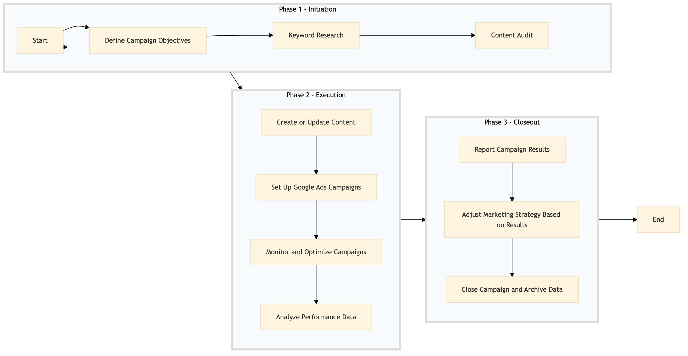

| Role | Steps |
|---|---|
| Digital Marketing Manager | 1.1 3.1 3.2 |
| Digital Marketing Specialist | 1.2 2.1 3.3 |
| Content Manager | 1.3 |
| Content Writer | 2.2 |
| SEM Specialist | 2.4 |
| Digital Marketing Analyst | 3.3 |
| Step | Name | Role | System | Input | Output | KPI | Dec? | Exc? | Pain Point / Risk |
|---|---|---|---|---|---|---|---|---|---|
| 1.1 | Define Campaign Objectives | Digital Marketing Manager | Oracle OPERA Cloud | Market research data | Campaign objectives document | Less than 2 hours | N | Y | Aligning campaign goals with hotel's overall marketing strategy |
| 1.2 | Keyword Research | Digital Marketing Specialist | Google Analytics, SEMrush | Campaign objectives document | Keyword list | Less than 4 hours | N | Y | Identifying relevant and high-performing keywords |
| 1.3 | Content Audit | Content Manager | Oracle OPERA Cloud, WordPress | Keyword list | Content audit report | Less than 6 hours | N | Y | Ensuring existing content is optimized for SEO |
| 2.1 | Create or Update Content | Content Writer | WordPress, Oracle OPERA Cloud | Content audit report | Optimized content pages | Less than 8 hours per page | N | Y | Writing engaging and SEO-friendly content |
| 2.2 | Set Up Google Ads Campaigns | SEM Specialist | Google Ads, Oracle OPERA Cloud | Keyword list, campaign objectives document | Active Google Ads campaigns | Less than 10 hours | N | Y | Configuring campaigns for optimal performance |
| 2.3 | Monitor and Optimize Campaigns | Digital Marketing Analyst | Google Analytics, Google Ads | Active Google Ads campaigns | Optimized campaign settings | Daily review in less than 30 minutes | Y | N | Continuous monitoring and optimization for better ROI |
| 2.4 | Analyze Performance Data | Digital Marketing Manager | Google Analytics, Microsoft Power BI | Campaign performance data | Performance analysis report | Less than 1 hour per week | N | Y | Interpreting complex analytics for actionable insights |
| 3.1 | Report Campaign Results | Digital Marketing Manager | Oracle OPERA Cloud, Microsoft Power BI | Performance analysis report | Campaign results presentation | Less than 2 hours | N | Y | Preparing a clear and compelling presentation |
| 3.2 | Adjust Marketing Strategy Based on Results | Digital Marketing Manager, Revenue Manager | Oracle OPERA Cloud, IDeaS G3 RMS | Campaign results presentation | Updated marketing strategy document | Less than 4 hours | Y | N | Aligning marketing strategy with business goals |
| 3.3 | Close Campaign and Archive Data | Digital Marketing Specialist | Google Analytics, Oracle OPERA Cloud | Campaign results presentation | Archived campaign data | Less than 1 hour | N | Y | Properly archiving and securing campaign data |
A structured process document for managing SEO & SEM campaigns at a Marriott full-service hotel using Oracle OPERA Cloud PMS and other key Marriott systems.